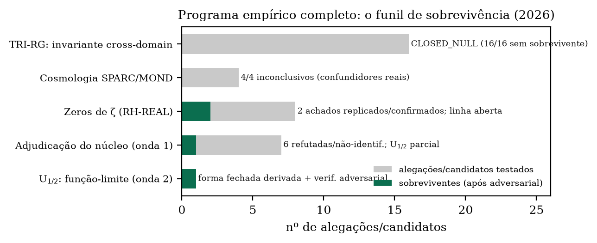
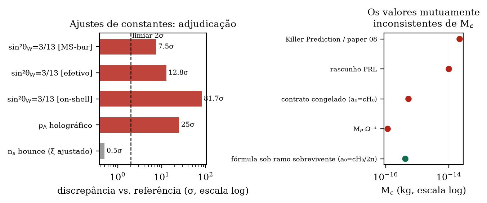
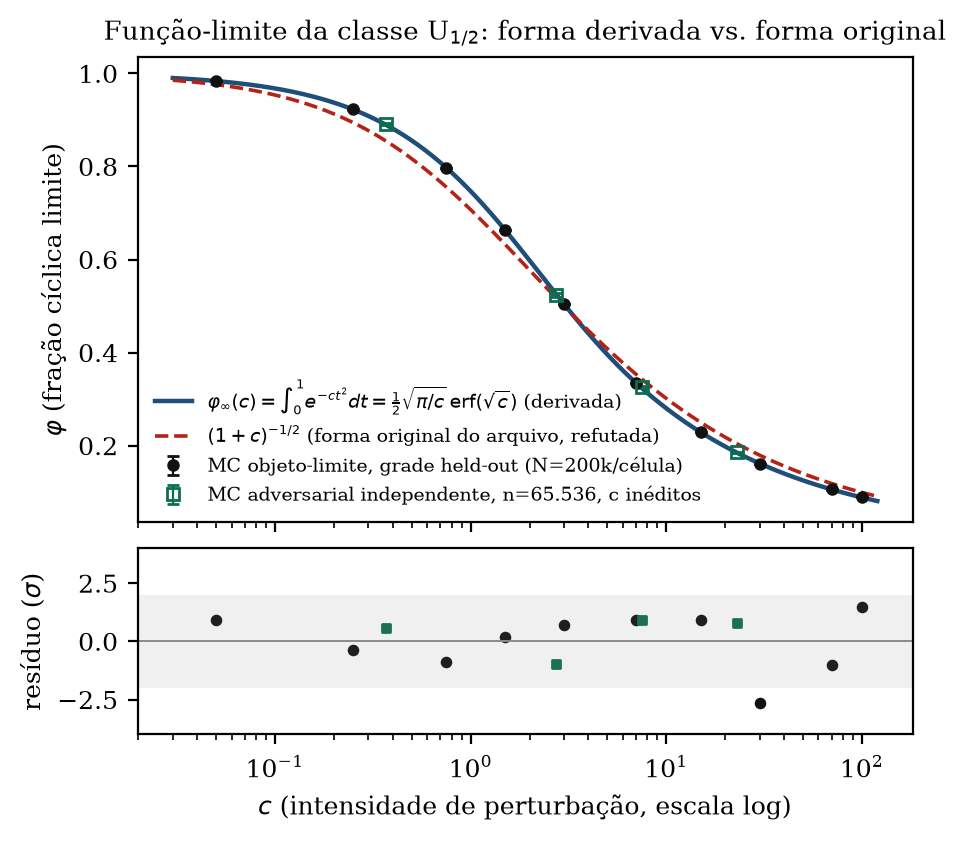
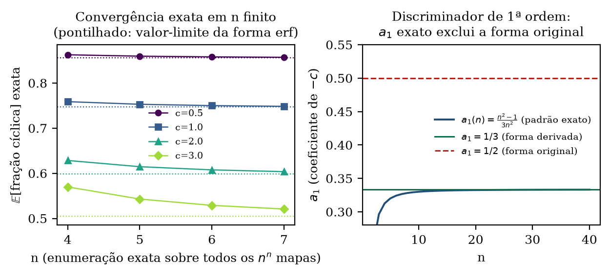
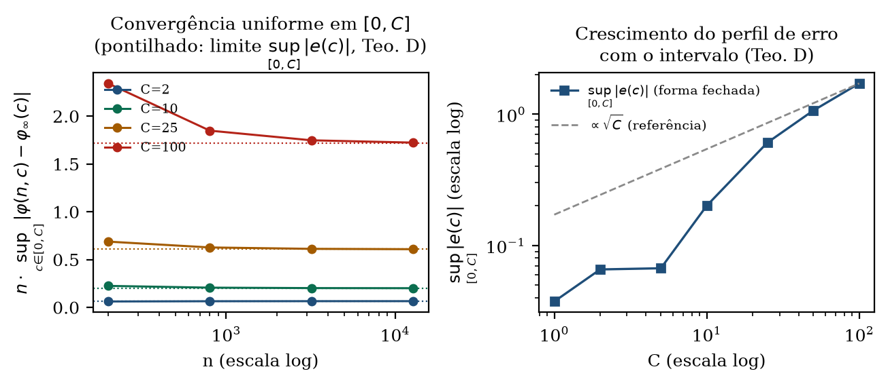
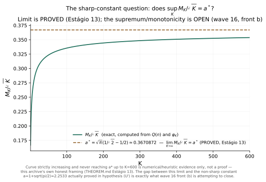
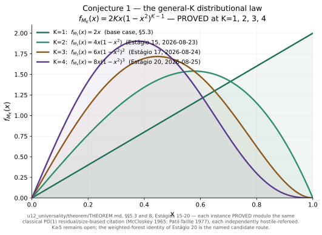

Nota de atualização (23 de agosto de 2026). Desde a publicação deste preprint, duas frentes fecharam os itens mais difíceis que a Seção 5 havia deixado em aberto: uma forma fechada exata, em todas as ordens, para a recursão discreta subjacente, e a prova de que a convergência $\varphi(n,c)\to\varphi_\infty(c)$ é uniforme em todo o domínio $c\in[0,\infty)$, não apenas pontual — ambas sob a mesma disciplina de pré-registro e reprodução adversarial obrigatória da Seção 2. Ver Seção 5.1.
Nota de atualização (24 de agosto de 2026). Sete estágios adicionais (ondas 12–15 do
laboratório, THEOREM.md "Estágio 11" a "Estágio 17") fecharam, sob a mesma disciplina:
uma taxa de convergência explícita e incondicional — as duas obstruções condicionais que a
Seção 5.1 deixara nomeadas (a regularidade do perfil de erro uniforme, e a hipótese distinta (U′) por
trás da taxa) foram ambas provadas; o limite exato $\lim_{K\to\infty} M_K/\sqrt{K} = a^*$ da constante
nítida; formas fechadas gerais para as constantes agudas de erro $D^{*(p)}_r(b)$ até $p=10$, com a
maquinaria subjacente provada correta para todo $k$ por indução; e a lei distribucional condicional da
Seção 5, antes conjectural para todo $K\ge2$, agora provada (módulo uma citação clássica) em $K=2$
e — inesperadamente — em $K=3$. Ver Seção 5.2. Uma sexta onda de cinco frentes paralelas ataca,
neste momento, os cinco itens abertos nomeados ao fim do Estágio 17; nenhum resultado dela é reportado
aqui.
Arquivos de pesquisa de longa duração acumulam alegações quantitativas de força epistêmica muito desigual: derivações, ajustes, coincidências numéricas, saídas de simulação e conjecturas convivem lado a lado. O arquivo Tamesis — um programa independente com mais de 280 registros auditados — enfrentou esse problema da forma mais direta possível: submetendo as próprias alegações a um laboratório de adjudicação (o Discovery Lab) desenhado para fechá-las contra dados externos reais, com regras que tornam o resultado negativo tão publicável quanto o positivo.
Este artigo sintetiza o desfecho completo desse programa até agosto de 2026. Ele tem duas contribuições. A primeira é metodológica: um protocolo executável de adjudicação — pré-registro de critérios antes de qualquer cálculo, proveniência obrigatória de valores de referência (nenhum número digitado de memória), validação sintética antes de dado real, e reprodução adversarial independente para todo achado positivo — que, aplicado com agentes computacionais autônomos, fechou mais de trinta alegações em ciclos de horas, não meses. A segunda é um resultado matemático: a função-limite exata da classe de universalidade U1/2, derivada (não ajustada), com verificação adversarial em quatro superfícies independentes.
O laboratório opera sob uma máquina de estados explícita
(CANDIDATE_FORMULATING → … → CLOSED_*), na qual estados terminais negativos
(CLOSED_NULL, CLOSED_INCONCLUSIVE) são catalogados com o mesmo peso
que replicações positivas. Cinco regras foram invariantes em todos os testes aqui relatados:
(i) Critérios antes do cálculo. Cada frente fixa, em nota de metodologia commitada antes de qualquer comparação com dados reais, o que contará como "consistente", "reproduzido" ou "refutado". Correções posteriores são limitadas a um adendo datado e delimitado. (ii) Proveniência total. Valores de referência (PDG, CODATA, Planck) são obtidos por consulta direta à fonte, com URL, data e valor citados; fonte inacessível é reportada como inacessível, nunca substituída de memória. (iii) Validação sintética primeiro. Nenhuma pipeline toca dado real sem antes recuperar um caso com resposta conhecida; quatro dos dezesseis candidatos da linha de invariantes fecharam nessa etapa, sem jamais tocar dado real. (iv) Reprodução adversarial obrigatória. Todo achado positivo é atacado por um agente independente, com implementação própria escrita antes de ler o código original, semente própria e, quando possível, rota matemática distinta. (v) Nenhuma reformulação pós-resultado. Hipóteses e critérios não mudam depois de vistos os dados reais; apenas bugs de implementação demonstrados podem ser corrigidos, com registro.

CLOSED_NULL com
16/16 candidatos sem sobrevivente; as quatro tentativas cosmológicas (SPARC/MOND, binárias
largas do Gaia) fecharam inconclusivas após demonstração de confundidores reais; a
adjudicação numérica do núcleo refutou seis de sete alegações. Os sobreviventes: dois
achados replicados sobre zeros de ζ e a função-limite U1/2 (Seção 5).A linha mais longa do programa testou se existe um par (mapa de coarse-graining, observável $I(X)$), definido uma única vez, capaz de detectar transições de regime documentadas em domínios reais genuinamente distintos (sismologia, EEG, ECG, mercados, geomagnetismo, vulcanologia, hidrologia, epidemiologia). Dezesseis candidatos ao longo de cinco rodadas — de critical slowing down e DFA a entropia de transferência e complexidade de ε-máquinas (CSSR completo) — produziram zero invariantes sobreviventes. Quatro achados brutos com $p<0{,}05$ foram refutados pela reprodução adversarial, que em todos os casos encontrou uma explicação mundana concreta: um nulo ETAS subcrítico, falha de generalização entre sujeitos, um terremoto M6,9 dominando a decomposição espectral e um artefato instrumental de baixa frequência eliminado por um filtro passa-alta padrão. A análise retrospectiva revelou que os candidatos colapsam em apenas ~4 eixos matemáticos latentes — persistência/taxa de entropia, taxa de relaxação local, densidade de recorrência via embedding e estatística de cauda — sugerindo que o espaço das estatísticas não-lineares "óbvias" foi efetivamente coberto.
A auditoria descobriu que os dois resultados cosmológicos de manchete do arquivo legado
("EFE CONFIRMED, $p<10^{-6}$" e "MOND DETECTED" em binárias do Gaia) repousavam sobre dados
fabricados — curvas de rotação digitadas à mão para galáxias inexistentes no catálogo SPARC real
e uma lista de binárias com source_id sequenciais artificiais. Refeitos com dados
reais (SPARC 175 galáxias; El-Badry et al. 2021, 43.147 sistemas pós-corte) sob pré-registro,
os quatro testes fecharam inconclusivos por razões estruturais demonstradas — diluição por
projeção e multiplicidade oculta não resolvida, esta última suficiente sozinha para explicar
todo o sinal residual. Nenhum veredito foi aceito contra as salvaguardas pré-registradas.

$\sin^2\theta_W = 3/13$, marcado "CONFIRMED, 0,19%" no arquivo, está a 7,5σ da referência PDG no esquema $\overline{\mathrm{MS}}$ — o mais favorável — e o código-fonte contém o valor-alvo hardcoded, configurando ajuste, não previsão. $\alpha^{-1} = \Omega^{1.03}$ é um ajuste de um parâmetro contínuo a um único número (zero graus de liberdade), e sua própria aritmética interna não fecha ($\Omega^{1.033}=136{,}956$). A densidade de energia escura "holográfica" reproduz, por identidade algébrica, a densidade crítica — a razão alegada de 1,46 é exatamente $1/\Omega_\Lambda$. A lei de massas de quarks por comprimento de corda de nós ideais falha na validação leave-one-out (5/6 quarks, erros de até 52×) e fica no percentil 86/70 de um nulo de permutação sobre atribuições alternativas de nós.
A única linha continuamente aberta produziu dois números replicados sobre os zeros reais de Riemann (tabelas de Odlyzko, três regimes de altura até #10²¹): (i) sequências de gaps grandes consecutivos são menos comuns que sob reordenação aleatória — sinal na direção oposta à hipótese original, reportado como tal e aprovado no gate de replicação em altura independente; (ii) o gap mínimo normalizado entre $N$ zeros escala como $N^{-1/3}$ ($\hat\beta = -0{,}3395$, IC95% $[-0{,}387; -0{,}287]$), consistente com GUE e excluindo Poisson ($N^{-1}$) e GOE ($N^{-1/2}$) — confirmação numérica de universalidade já conhecida, catalogada sem alegação de novidade. Um terceiro teste (máximos de $\log|\zeta|$ em intervalos curtos, discriminando a correção $-\tfrac{3}{4}\log\log\log T$ de Fujii–Harper–Keating do $-\tfrac{1}{4}$ do modelo iid) está pré-registrado e em execução; nenhum resultado é reportado aqui. Nenhuma dessas análises constitui progresso sobre a Hipótese de Riemann, e nenhuma alegação nesse sentido é feita.
A única alegação do núcleo que sobreviveu parcialmente à adjudicação foi a classe de universalidade U1/2: tome uma permutação uniforme de $[n]$ e redirecione cada ponto, independentemente, com probabilidade $c/n$, para um destino uniforme; seja $\varphi(n,c)$ a fração esperada de pontos em ciclos do grafo funcional resultante. O arquivo alegava, como "teorema", $\varphi_\infty(c) = (1+c)^{-1/2}$. A reprodução adversarial confirmou o expoente de cauda $1/2$ e a distinção decisiva frente às classes concorrentes ($\Delta\mathrm{AIC} > 2600$), mas refutou a forma exata: os desvios são sistemáticos e estáveis até $n = 64.000$.
A caracterização subsequente derivou a forma correta. Explorando a órbita de um ponto típico no objeto-limite (estrutura de ciclos Poisson–Dirichlet(1) da permutação, redirecionamentos como processo de Poisson de intensidade $c$), a probabilidade de sobrevivência cíclica condicional à massa percorrida $t$ fatoriza como $(1-t)e^{-ct^2}$ — um cancelamento exato no funcional gerador de Poisson é o que torna a forma fechada possível — dando, com zero parâmetros livres:
$$\varphi_\infty(c) \;=\; \int_0^1 e^{-ct^2}\,dt \;=\; \frac{1}{2}\sqrt{\frac{\pi}{c}}\, \operatorname{erf}(\sqrt{c}),$$
com série inteira $\sum_k \frac{(-c)^k}{k!(2k+1)} = 1 - \tfrac{c}{3} + \tfrac{c^2}{10} - \dots$ e cauda $\tfrac{\sqrt{\pi}}{2}c^{-1/2}$. O primeiro coeficiente já decide a questão analiticamente: $a_1 = 1/3$, enquanto a forma original exigiria $1/2$. Condicionada a $K$ redirecionamentos sobreviventes, a fração cíclica tem média $4^K (K!)^2/(2K+1)!$ — as integrais de Wallis — e lei $2Kx(1-x^2)^{K-1}$, que identificamos como exatamente o caso de parâmetro fixo do modelo de "permutações corrompidas" de Hansen & Jaworski [4]; nosso resultado é a sua mistura de Poisson, cuja forma fechada erf não encontramos publicada (busca não exaustiva).


A verificação adversarial atacou o resultado em quatro superfícies independentes, com números travados antes de ler a derivação original: enumeração exata em $n$ finito (validada contra enumeração tripla de força bruta, diferença $< 3\times10^{-16}$), Monte Carlo em valores de $c$ nunca usados, re-derivação analítica cega — que reproduziu a mesma fórmula por rota própria — e a lei condicional de Wallis. Veredito: confirmado nas quatro; a citação de Hansen–Jaworski foi verificada no PDF original. Permanecem como limitações honestas: a passagem $n$ finito $\to$ contínuo está controlada empiricamente (até $n = 65.536$), não formalizada [ver §5.1 abaixo — item fechado em 23/08/2026]; e a lei distribucional completa para $K \geq 2$ segue conjectura, ainda que agora com suporte KS adicional [ver §5.2 abaixo — instâncias $K=2$ e $K=3$ provadas (módulo uma citação clássica) em 23–24/08/2026; $K\ge4$ permanece aberto].
Duas frentes subsequentes, sob a mesma disciplina de pré-registro e reprodução adversarial obrigatória da Seção 2, fecharam os dois itens mais difíceis deixados em aberto acima.
Forma fechada em todas as ordens. Estendendo a mesma técnica de casamento assintótico que produzira os termos de erro de ordem $1$, $1/n$ e $1/n^2$ a um índice de ordem simbólico, obtém-se uma expressão fechada — não mais uma sequência infinita de correções — para a recursão discreta subjacente, válida em toda ordem, todo $K$, todo $b$ e todo $n$ finito. Os coeficientes resultantes revelaram-se, antes de qualquer ajuste, exatamente os números de Stirling de primeira espécie sem sinal; como estes são os coeficientes de um fatorial ascendente, a série infinita re-soma-se de forma exata e finita (termina após $K+1$ termos). Uma prova elementar independente, sem a maquinaria de casamento assintótico, confirma o mesmo resultado. A reprodução adversarial — 215.070 checagens exatas contra um simulador construído do zero a partir das regras originais, zero divergências — confirmou a afirmação central, encontrou um erro real numa alegação negativa secundária (corrigido por adendo datado) e promoveu duas caracterizações antes apenas numéricas a demonstrações.
Convergência uniforme. O Teorema 3 acima estabelece $\varphi(n,c)\to\varphi_\infty(c)$ apenas para cada $c$ fixo, um de cada vez; a passagem contínua não estava formalizada. Uma frente dedicada provou, incondicionalmente e a partir de apenas dois lemas elementares — um acoplamento Lipschitz uniforme em $n$, e um limitante de cauda uniforme em $n$ — que essa convergência é uniforme não só em intervalos compactos $[0,C]$, mas em todo o domínio $[0,\infty)$, mais forte do que fora pedido. Um perfil de erro de primeira ordem em forma fechada, $$e(c)=\tfrac12\int_0^1\frac{1-(1+ct^2+c^2t^4)e^{-ct^2}}{t^2}\,dt,\qquad e(c)\sim\tfrac{\sqrt{\pi c}}{8}\ (c\text{ grande}),$$ foi derivado como subproduto; sua versão uniforme (em oposição a coeficiente-a-coeficiente) permanece condicional a uma única hipótese de regularidade nomeada e não provada. A reprodução adversarial atacou os dois teoremas incondicionais e os dois lemas que os sustentam com peso máximo — auditando cada etapa do limitante de cauda separadamente — e não encontrou erro em nenhum deles; sua única descoberta substantiva foi que o documento original nomeava incorretamente qual lacuna específica mantinha condicional um resultado secundário, corrigido por adendo datado sem afetar os teoremas incondicionais.

Nenhuma das duas extensões altera o Teorema 3 ou a classificação da classe U$_{1/2}$ — ambas
dependem de $n\to\infty$, preservado exatamente. A limitação honesta remanescente mudou de
natureza: já não é a ausência de uma prova de convergência, mas a ausência de uma taxa explícita e
uniforme-em-$K$, condicional a uma única hipótese nomeada [ver §5.2 abaixo — hipótese provada e
taxa explícita incondicional obtida em 23/08/2026]. Fontes completas, ledgers de decisão e
os dois relatórios adversariais independentes: THEOREM.md, "Estágio 9" e "Estágio
10", em 05_DISCOVERY_LAB/02_TESTS/CORE_NUMERICS/u12_universality/theorem/.
Sete estágios adicionais (THEOREM.md, "Estágio 11" a "Estágio 17"), sob a mesma
disciplina da Seção 2 — culminando, em cada caso, num referee hostil dedicado com implementação
independente (e, nos Estágios 15 e 17, verificação prévia adicional da própria sessão
orquestradora antes do despacho) — fecharam, em quatro linhas de trabalho:
Taxa explícita e incondicional (Estágios 11–12). O crescimento geométrico qualitativo de $M_K$ foi provado por rota alternativa via a forma fechada em todas as ordens — fechando a hipótese de regularidade que mantinha condicional o perfil de erro uniforme da Seção 5.1 — e em seguida a hipótese distinta e mais forte por trás de uma taxa explícita — (U′), $|\varphi_n^{(K)}-\varphi_K| \le a\sqrt{K}/n$ uniforme em $0\le K\le n$ — foi provada, com constante explícita não-nítida $a = 1+\sqrt{\pi/2} \approx 2{,}2533$, dando a taxa incondicional, para $n\ge4$ e $0\le c\le n$: $$\bigl|\varphi(n,c)-\varphi_\infty(c)\bigr| \;\le\; \frac{(1+\sqrt{\pi/2})\sqrt{c} + 0{,}2805}{n}.$$ O referee re-derivou tudo do zero das fontes primárias, construiu um motor de Markov independente e checou a desigualdade final com zero violações até $K=10^5$.
A constante nítida no limite (Estágio 13). Um limitante inferior elementar para a função $Q$ de Ramanujan, $Q(n) \ge \sqrt{\pi n/2} - 6$, elevou o limitante superior implícito da prova anterior a um limite exato: $\lim_{K\to\infty} M_K/\sqrt{K} = a^* = \sqrt{\pi}(1/\sqrt{2}-1/2) = 0{,}3670872\ldots$ — a primeira confirmação rigorosa de que a constante nítida numericamente conjecturada é o valor assintótico correto. O supremo $\sup_K M_K/\sqrt{K} = a^*$ (equivalente a monotonicidade) permanece aberto: duas rotas foram tentadas e falharam, ambas documentadas com o contraexemplo ou a obstrução exata que as matou.

05_DISCOVERY_LAB/assets/make_assets.py.Formas fechadas gerais para as constantes de erro (Estágios 14 e 16). A forma fechada geral-$b$ das constantes agudas $D^{*(p)}_r(b)$, deixada aberta pelo Estágio 9, foi provada primeiro para $p=1,\ldots,4$ (165.888 checagens exatas do referee, zero divergências) e depois estendida a $p=1,\ldots,10$ — $Q_p(u)$ via identidades de Newton e momentos centrais via função geradora de cumulantes, ambos algoritmos gerais em $p$, não ajustados caso a caso; 26.710 checagens exatas da frente mais 18.653 do referee por métodos deliberadamente diferentes (interpolação de Lagrange), zero divergências em ambas. O referee foi além do mandato e construiu uma prova indutiva de que a máquina $H_k(r,b)$ subjacente é correta para todo $k$ — de modo que $p>10$ permanece aberto apenas por custo computacional de execução simbólica, não por incerteza matemática residual.
A lei distribucional condicional, agora provada em $K=1,2,3$ (Estágios 15 e 17). A última limitação nomeada na Seção 5 — a lei $f_{M_K}(x) = 2Kx(1-x^2)^{K-1}$ conjectural para todo $K\ge2$ — foi fechada em suas duas primeiras instâncias: $f_{M_2}(x)=4x(1-x^2)$ (onda 14) e, ao contrário da expectativa explícita de não-fechamento por explosão combinatória registrada no próprio despacho, $f_{M_3}(x)=6x(1-x^2)^2$ (onda 15). O mecanismo que impediu a explosão: nós fora-de-ciclo do grafo de redirecionamentos contribuem massa cíclica nova exatamente zero, independentemente do alvo, colapsando as $4^K$ configurações brutas de destino ao número (bem menor) de estruturas de ciclo em $K$ itens rotulados — $64 \to 7$ formas em $K=3$. Cada instância é provada módulo a mesma citação clássica de amostragem size-biased/residual de Poisson–Dirichlet(1) já usada pelo caso base $K=1$, e cada uma passou por referee hostil dedicado (para $K=3$, briefado explicitamente para caçar a falha que explicaria a surpresa: re-derivação completa das 7 formas, $8\times10^6$ amostras de Monte Carlo independente, 26.000 testes de mecanismo discreto, zero erros matemáticos encontrados). $K\ge4$ permanece aberto e explicitamente não tentado; a mistura de Poisson completa (a "Conjectura 2" do arquivo) permanece conjectura.

THEOREM.md), $K=2$
(Estágio 15) e $K=3$ (Estágio 17, fechamento inesperado). Curvas traçadas diretamente das
formas fechadas provadas, sem simulação nem ajuste. Gerada por
05_DISCOVERY_LAB/assets/make_assets.py.
Os itens abertos nomeados ao fim do Estágio 17 — alvo, neste momento, de uma sexta onda
de cinco frentes paralelas cujos resultados não são reportados aqui: Conjectura 1 para $K\ge4$;
a Conjectura 2 em geral; $\sup_K M_K/\sqrt{K} = a^*$; $D^{*(p)}_r(b)$ para $p>10$ (barreira
puramente computacional); e a forma fechada completa do piso de ciclos longos do modelo M-CLUST
em $b=1$ (linha separada, parcialmente fechada). Adicionalmente, a lei de escala
$\gamma\in(0,1)$ (caracterizada, não provada — Estágios 10–13) permanece aberta e não é alvo
desta onda. Fontes completas: THEOREM.md,
Estágios 11–17, e os relatórios adversarial/REFEREE_REPORT.md de cada frente, em
05_DISCOVERY_LAB/02_TESTS/CORE_NUMERICS/u12_universality/theorem/.
O contraste central deste programa é deliberado: a mesma disciplina que refutou seis alegações do núcleo e fechou dezesseis candidatos como nulos é a que sustenta o único resultado positivo. Sem os fechamentos negativos, a forma fechada da Seção 5 seria apenas mais uma curva bem ajustada num arquivo cheio delas; com eles, ela é o sobrevivente de um funil que demonstrou, caso a caso, que sabe matar alegações — inclusive as suas próprias. Três lições metodológicas merecem registro. Primeiro, a reprodução adversarial com implementação independente antes da leitura do código original foi o único mecanismo que capturou todos os artefatos (quatro achados $p<0{,}05$ refutados por explicações mundanas concretas). Segundo, a validação sintética obrigatória evitou que quatro candidatos sem identificabilidade consumissem dados reais. Terceiro, a exigência de proveniência transformou disputas de interpretação em questões verificáveis de fonte.
O que este artigo não afirma. Nenhum progresso sobre Problemas do Millennium; nenhuma evidência de que o universo seja computacional, holográfico ou simulado; nenhuma detecção de física além do modelo padrão ou de ΛCDM; nenhuma medição de $M_c$ — a fronteira experimental de interferometria de ondas de matéria permanece ~$2\times10^6$ vezes abaixo da escala relevante, como o próprio arquivo registra. O resultado da Seção 5 é matemática combinatória sobre um ensemble específico, e sua conexão com qualquer sistema físico permanece não estabelecida.
Um arquivo de pesquisa pode ser tratado como objeto experimental: suas alegações enumeradas, seus critérios travados, seus números confrontados com o mundo, e seus erros documentados com o mesmo cuidado que seus acertos. O saldo aqui — dezenas de fechamentos negativos, dois achados replicados sobre zeros de ζ e uma função-limite exata derivada e verificada adversarialmente — é o que um programa auto-corretivo produz quando o resultado negativo é tratado como informação, não como derrota. Todos os ledgers de decisão, notas de metodologia, códigos, dados e vereditos adversariais estão públicos no repositório, commit a commit, na ordem em que aconteceram.
DECISION_LEDGER.yaml, TEST_QUEUE.yaml), notas de metodologia e
vereditos adversariais, 2026. CC BY 4.0.